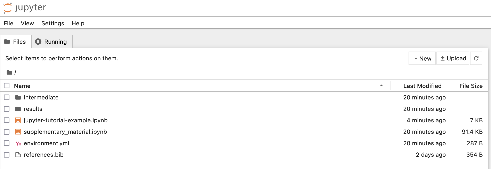
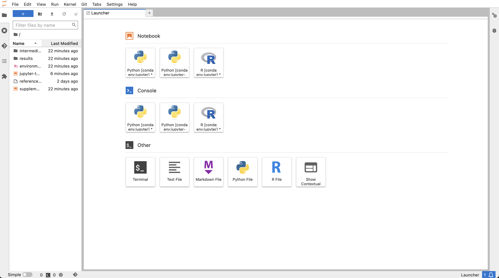
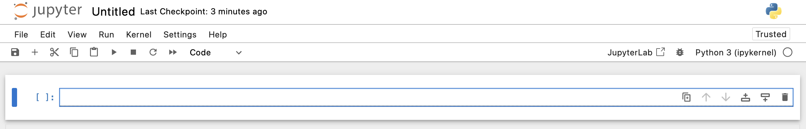
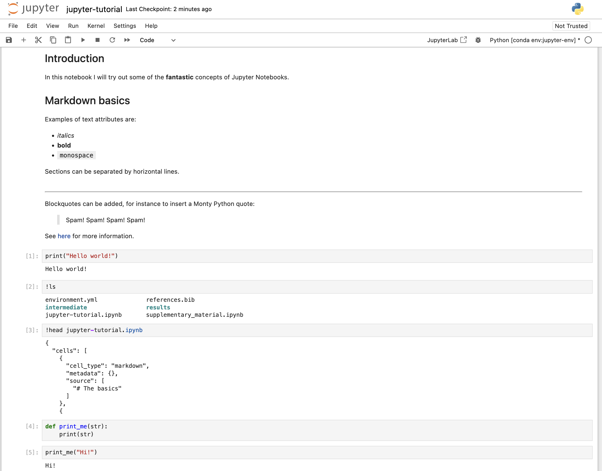
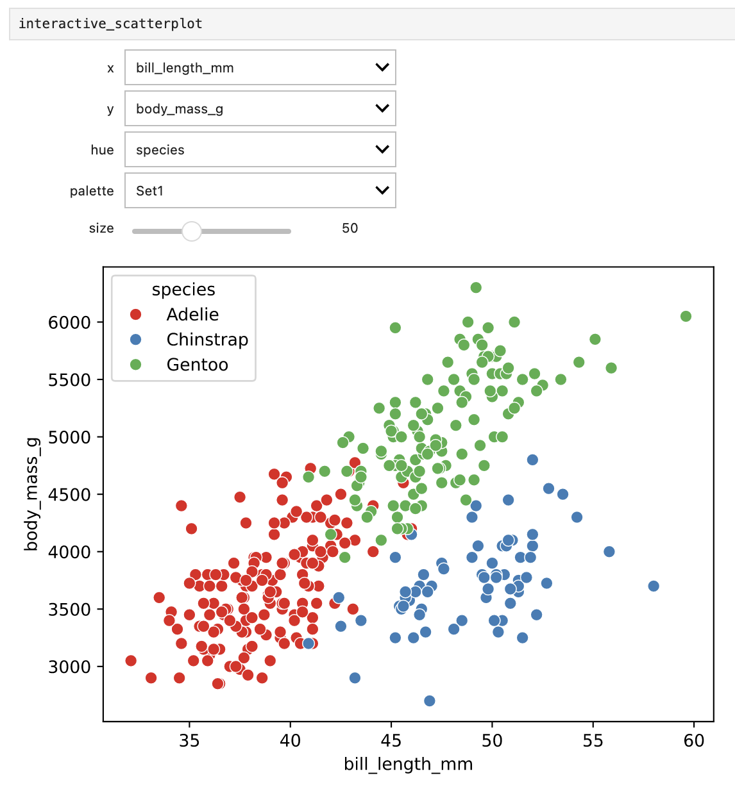

1 Introduction
The Jupyter Notebook is an open-source web application that allows you to create and share documents that contain code, equations, visualizations and text. The functionality is partly overlapping with Quarto (see the tutorial), in that they both use markdown and code chunks to generate reports that integrate results of computations with the code that generated them. Jupyter Notebook comes from the Python community while Quarto was developed by Posit (who also created R Markdown and RStudio), but you could use most common programming languages in either alternative. In practice though, it’s quite common that R developers use Jupyter but probably not very common that Python developers use RStudio. Some reasons to use Jupyter include:
- Python is lacking a really good IDE for doing exploratory scientific data analysis, like RStudio or Matlab. Some people use Jupyter simply as an alternative for that.
- The Jupyter Project community is large and dynamic, and there are lots of tools for sharing, displaying or interacting with notebooks.
- An early ambition with Jupyter notebooks (and its predecessor IPython notebooks) was to be analogous to the lab notebook used in a wet lab. It would allow the data scientist to document his or her day-to-day work and interweave results, ideas, and hypotheses with the code. From a reproducibility perspective, this is one of the main advantages.
- Jupyter notebooks can be used, just like Quarto, to provide a tighter connection between your data and your results by integrating results of computations with the code that generated them. They can also do this in an interactive way that makes them very appealing for sharing with others.
As always, the best way is to try it out yourself and decide what to use it for!
This tutorial depends on files from the course GitHub repo. Take a look at the setup for instructions on how to set it up if you haven’t done so already. Then open up a terminal and go to workshop-reproducible-research/tutorials/jupyter and activate your jupyter-env Conda environment.
- Jupyter: a project to develop open-source software, open-standards, and services for interactive computing across dozens of programming languages. Lives at jupyter.org.
- Jupyter Notebook: A web application that you use for creating and managing notebooks. One of the outputs of the Jupyter project.
- Jupyter lab: A more powerful and feature-rich interface that also includes a terminal, debugger, tabs etc.
- Jupyter notebook: The actual
.ipynbfile that constitutes your notebook.
2 The basics
One thing that sets Jupyter Notebook apart from what you might be used to is that it’s a web application, i.e. you edit and run your code from your browser. But first you have to start the Jupyter Notebook server. At this point you may either try the classic notebook interface by running:
jupyter notebook --allow-rootOr give the more feature-rich Jupyter lab interface a try by running:
jupyter lab --allow-rootWhichever interface you choose you should see something similar to this printed to your terminal:
[I 18:02:26.722 NotebookApp] Serving notebooks from local directory: /Users/john/workshop-reproducible-research/tutorials/jupyter
[I 18:02:26.723 NotebookApp] 0 active kernels
[I 18:02:26.723 NotebookApp] The Jupyter Notebook is running at:
[I 18:02:26.723 NotebookApp] http://localhost:8888/?token=e03f10ccb40efc3c6154358593c410a139b76acf2cae000
[I 18:02:26.723 NotebookApp] Use Control-C to stop this server and shut down all kernels (twice to skip confirmation).
[C 18:02:26.724 NotebookApp]
Copy/paste this URL into your browser when you connect for the first time,
to login with a token:
http://localhost:8888/?token=e03f10ccb40efc3c6154358593c410a139b76acf2cae785c
[I 18:02:27.209 NotebookApp] Accepting one-time-token-authenticated connection from ::1If you see the error message Start : This command cannot be run due to the error: The system cannot find the file specified. ... then try starting Jupyter with jupyter notebook --no-browser then copy the URL given into the browser directly.
Depending on what version of the notebook conda package you have installed, the interface may look slightly different. The screenshots in this tutorial are from version 7, an update which has brought the ‘classic’ Jupyter notebook closer to the Jupyter lab interface. Read more about this update at the Jupyter homepage.
The Jupyter Notebook/Lab interface probably opened up a web browser for you automatically, otherwise go to the address specified in the message in the terminal. Note that the server is running locally (as http://localhost:8888) so this does not require that you have an active internet connection. Also note that it says:
Serving notebooks from local directory: </some/local/path/workshop-reproducible-research/tutorials/jupyter>Everything you do in your Notebook session will be stored in this directory, so you won’t lose any work if you shut down the server.

What you’re looking at is the Notebook dashboard. This is where you manage your files, notebooks, and kernels. The Files tab shows the files in your directory. The Running tab keeps track of all your processes.
The Jupyter lab dashboard should look something like this:

Let’s start by creating an empty notebook. You can do this by selecting the Files tab and clicking New > Notebook. When the notebook opens, select the suggested Python 3 kernel from the drop-down menu.
This will open up a new tab or window looking like this:

Start by giving your notebook a name by clicking on the text “Untitled” at the top of the page. Enter “jupyter-tutorial.ipynb”.
Note that for most of this tutorial we will describe how you work in the actual notebook and not devote a lot of time to the extra features available in the Jupyter lab interface.
If you want to start Jupyter Notebooks on a cluster that you SSH to (e.g. Uppmax) see the section in the Extra material
Jupyter notebooks are made up of cells, and you are currently standing in the first cell in your notebook. Your cursor should be blinking in this cell, indicating that you are in “Edit mode” meaning that you can type text in the cell. Pressing the Esc key puts you in “Command mode” which allows you to manipulate the notebook as a whole, more on this later.
Cells in Jupyter notebooks can be of two types:markdown or code.
- Markdown:
These cells contain static material such as captions, text, lists, images and so on. You express this using Markdown, which is a lightweight markup language. Markdown documents can then be converted to other formats for viewing (the document you’re reading now is written in Markdown and then converted to HTML). The format is discussed a little more in detail in the Quarto tutoriall. Jupyter Notebook uses a dialect of Markdown called GitHub Flavoured Markdown, which is described here.
- Code:
These are the cells that actually do something, just as code chunks do in Quarto/R Markdown. You can write code in dozens of languages and do all kinds of clever tricks. You then run the code cell and any output the code generates, such as text or figures, will be displayed beneath the cell. We will get back to this in much more detail, but for now it’s enough to understand that code cells are for executing code that is interpreted by a kernel (in this case the Python version in your Conda environment).
Before we continue, here are some shortcuts that can be useful. Note that they are only applicable when in “Command mode”. Most of them are also available from the menus. You can also view this list of shortcuts from the Help menu under “Show Keyboard Shortcuts”.
| Shortcut | Effect |
|---|---|
enter |
Enter Edit mode |
escape |
Enter Command mode |
ctrl-enter |
Run the cell |
shift-enter |
Run the cell and select the cell below |
alt-enter |
Run the cell and insert a new cell below |
s |
Save the notebook |
tab |
For code completion or indentation |
m,y |
Toggle between Markdown and Code cells |
d-d |
Delete a cell |
a |
Insert cells above current cell |
b |
Insert cells below current cell |
x |
Cut currently selected cells |
v |
Paste cell below |
o |
Toggle output of current cell |
3 Writing markdown
Let’s use our first cell to create a header. Change the format from Code to Markdown using the drop-down list in the Notebook Toolbar, or by pressing the m key when in command mode. Double click on the cell, or hit enter to enter editing mode and input “# My notebook” (“#” is used in Markdown for header 1). Run the cell with ctrl-enter (cmd-enter on Mac).
Markdown is a simple way to structure your notebook into sections with descriptive notes, lists, links, images etc.
Below are some examples of what you can do in markdown. Paste all or parts of it into one or more cells in your notebook to see how it renders. Make sure you set the cell type to Markdown.
## Introduction
In this notebook I will try out some of the **fantastic** concepts of Jupyter
Notebooks.
## Markdown basics
Examples of text attributes are:
- *italics*
- **bold**
- `monospace`
Sections can be separated by horizontal lines.
---
Blockquotes can be added, for instance to insert a Monty Python quote:
> Spam!
> Spam!
> Spam!
> Spam!
See [here](https://jupyter-notebook.readthedocs.io/en/stable/examples/Notebook/Working%20With%20Markdown%20Cells.html) for more information.4 Writing code
Now let’s write some code! Since we chose a Python kernel, Python would be the native language to run in a cell. Enter this code in the second cell and run it:
print("Hello world!")Note how the output is directly displayed below the cell. This interactive way of working is one of the things that sets Jupyter Notebook apart from RStudio and Quarto. In RStudio/Quarto, documents are typically rendered top-to-bottom in one run, while you work in a Jupyter notebook in a different way. This requires some special attention when it comes to reproducibility, which we will get back to in the reproducibility section.
What is a Jupyter notebook? Let’s look a closer at the notebook we’re currently working in. Jupyter Notebooks are autosaved every minute or so, so you will already have it available. We can be a little meta and do this from within the notebook itself, by running some shell commands in a code cell. This very handy functionality is possible by prepending the command with !. Try adding !ls to a code cell and run it. This will list the files in the current directory.
Aha, we have a new file called jupyter-tutorial.ipynb! This is our notebook. Look at the first ten lines of the file by using !head jupyter-tutorial.ipynb. Seems like it’s just a plain old JSON file. Since it’s a text file it’s suitable for version control with for example Git. There are however some special considerations to take into account for Notebooks which we will cover in the reproducibility section of this tutorial.
Variables defined in cells become variables in the global namespace. You can therefore share information between cells. Try to define a function or variable in one cell and use it in the next. For example, add the following to a new cell and run it:
def print_me(str):
print(str)Now create a new cell and add:
print_me("Hi!")Your notebook should now look something like this.

The focus of this tutorial is not on how to write Markdown or Python; you can make really pretty notebooks with Markdown and you can code whatever you want with Python. Rather, we will focus on the Jupyter Notebook features that allow you to do a little more than that.
In this section we’ve learned:
- That a Jupyter notebook consists of a series of cells, and that they can be either markdown or code cells.
- That we execute the code in a code cell with the kernel that we chose when opening the notebook.
- We can run shell commands by prepending them with
!. - A Jupyter notebook is simply a text file in JSON format.
5 Magics
Magics constitute a simple command language that significantly extends the power of Jupyter notebooks. There are two types of magics:
- Line magics: Commands that are prepended by
%, and whose arguments only extend to the end of the line. - Cell magics: Commands that start with
%%and then apply to the whole cell. Must be written on the first line of a cell.
Now list all available magics with %lsmagic (which itself is a magic). You add a question mark to a magic to show the help (e.g. %lsmagic?). Some of them act as shortcuts for commonly used shell commands (%ls, %cp, %cat, ..). Others are useful for debugging and optimizing your code (%timeit, %debug, %prun, ..). For more information see the magics documentation.
A very useful magic, in particular when using shell commands a lot in your work, is %%capture. This will capture the stdout/stderr of any code cell and store them in a Python object. Run %%capture? to display the help and try to understand how it works. Try it out with either some Python code, other magics or shell commands. Here is an example of how you can make it work:
%%capture output
%%bash
echo "Print to stdout"
echo "Print to stderr" >&2… And in another cell:
print("stdout:" + output.stdout)
print("stderr:" + output.stderr)Tip
You can capture the output of some magics directly like this:my_dir = %pwd.
The %%script magic is used for specifying a program (Bash, Perl, Ruby, ..) with which to run the code (similar to a shebang). For some languages it’s possible to use these shortcuts:
%%ruby%%perl%%bash%%html%%latex%%R
In order to use the %%R magic you need to install the rpy2 extension, for example with Conda. This package is already installed in the jupyter-env environment you’re using for this tutorial. However, you also have to load it by running %load_ext rpy2.ipython in a cell.
Try this out if you know any of the languages above. Otherwise you can always try to print the quadratic formula with LaTeX!
\begin{array}{*{20}c} {x = \frac{{ - b \pm \sqrt {b^2 - 4ac} }}{{2a}}} & {{\rm{when}}} & {ax^2 + bx + c = 0} \\ \end{array}Another useful magic is %precision which sets the floating point precision in the notebook. As a quick example, add the following to a cell and run it:
float(100/3)Next set the precision to 4 decimal points by running a cell with:
%precision 4Now run the cell with float(100/3) again to see the difference.
Running %precision without additional arguments will restore the default.
In this section we’ve learned:
- The basics of Jupyter magics and the difference between line magics and cell magics
- How to capture and use output from notebook cells with
%%capture - How to use magics to run non-Python code in notebooks
6 Plotting
An essential feature of Jupyter Notebooks is of course the ability to visualize data and results via plots. A full guide to plotting in Python is beyond the scope of this course, but we’ll offer a few glimpses into the plotting landscape of Python.
First of all, Python has a library for plotting called matplotlib, which comes packed with functionality for creating high-quality plots. Below is an example of how to generate a line plot of a sine wave.
# Import packages
import numpy as np
import matplotlib.pyplot as plt
# Generate a set of evenly spaced numbers between 0 and 100
x = np.linspace(0,3*np.pi,100)
# Use the sine function to generate y-values
y = np.sin(x)
# Plot the data
line, = plt.plot(x, y, color='red', linestyle="-")By default plots are rendered in the notebook as rasterised images which can make the quality poor. To render in scalable vector graphics format use the set_matplotlib_formats from the matplotlib_inline package:
import matplotlib_inline
matplotlib_inline.backend_inline.set_matplotlib_formats('pdf', 'svg')Now try running the code for the sine wave plot again.
7 Other packages for plotting
As we mentioned Matplotlib comes with a lot of functionality which is great because it allows you to create all sorts of plots and modify them exactly to your liking. However, this can also mean that creating very basic plots might involve a lot of cumbersome coding, when all you want is a simple bar chart!
Fortunately there are a number of Python packages that build upon matplotlib but with a much simplified interface. One such popular package is Seaborn. Below we’ll see how to generate a nice looking bar plot with error bars.
First import the Seaborn package (using an abbreviated name to simplify typing):
import seaborn as snsNext we’ll load some example data of penguins collected at the Palmer Station, in Antarctica.
penguins = sns.load_dataset("penguins")
# Look at first 5 lines of the data
penguins.head(5)The most basic way to generate a bar plot of this data with Seaborn is:
sns.barplot(data=penguins)Simple right? Yes, but maybe not very informative. Here Seaborn simply calculates the mean of all numeric variables for the penguins and plots them with error bars representing a 95% confidence interval.
Let’s say that instead we want to plot the mean value of the body mass of the penguins at the different islands where they were examined.
sns.barplot(data=penguins, x="island", y="body_mass_g", errorbar="sd");Here we specified to use values in the ‘island’ column as categories for the x-axis, and values in the ‘body_mass_g’ column as values for the y-axis. The barplot function of Seaborn will then calculate the mean body mass for each island and plot the bars. With errorbar="sd" we tell the function to draw the standard deviation as error bars, instead of computing a confidence interval.
If we instead want to visualize the data as a scatterplot we can use the sns.scatterplot function. Let’s plot the body mass vs bill length for all penguins and colour the data points by species. We’ll also move the legend outside of the plotting area and modify the x and y-axis labels:
# Store the matplotlib axes containing the plot in a variable called 'ax'
ax = sns.scatterplot(data=penguins, x="bill_length_mm", y="body_mass_g",
hue="species")
# Modify the labels of the plot
ax.set_xlabel("Bill length (mm)")
ax.set_ylabel("Body mass (g)")
# Set legend position outside of plot
ax.legend(bbox_to_anchor=(1,1));If you want to save a plot to file you can use the plt.savefig function. Add the following to the bottom of the cell with the scatterplot code:
plt.savefig("scatterplot.pdf", bbox_inches="tight")The bbox_inches="tight" setting ensures that the figure is not clipped when saved to file.
The Seaborn website contains great tutorials and examples of other ways to plot data!
In this section we’ve learned:
- How to generate simple plots with
matplotlib - How to import and use the
Seabornpackage for plotting - How to save plots from notebooks to a file
8 Widgets
Since we’re typically running our notebooks in a web browser, they are quite well suited for also including more interactive elements. A typical use case could be that you want to communicate some results to a collaborator or to a wider audience, and that you would like them to be able to modify how the results are displayed. It could, for example, be to select which gene to plot for, or to see how some parameter value affects a clustering. Jupyter notebooks has great support for this in the form of widgets.
Widgets are eventful Python objects that have a representation in the browser, often as a control like a slider, text box, etc. These are implemented in the ipywidgets package.
The easiest way to get started with using widgets are via the interact and interactive functions. These functions auto-generate widgets from functions that you define, and then call those functions when you manipulate the widgets. This might sound abstract so let’s look at an example.
Let’s take the scatterplot of the penguins dataset that we generated in the previous section and add widgets that lets us choose variables to plot as well as coloring of the points.
First we’ll import the interactive function from ipywidgets. Let’s also import the widgets module which we we’ll use later. Add the following code to a cell and run it:
from ipywidgets import interactive, widgetsNow, in a new cell, define a function called scatterplot with the code to generate the plot itself. Also add a palette argument to the function so that we can specify the colour palette to use for the plot. The function should look like this:
def scatterplot(x, y, hue, palette):
ax = sns.scatterplot(data=penguins, x=x, y=y, hue=hue, palette=palette)Run the cell and create a new cell below it.
Next, we’ll use the interactive function to generate a widget to control the x, y, hue and palette arguments. The interactive function takes a function as its first argument, and then keyword arguments for each of the arguments in the function. The returned value is a widget which we will store in a variable called interactive_scatterplot. Add the following to a cell and run it:
interactive_scatterplot = interactive(scatterplot,
x=["bill_length_mm","bill_depth_mm","flipper_length_mm","body_mass_g"],
y=["body_mass_g","bill_length_mm","bill_depth_mm","flipper_length_mm"],
hue=["species","island","sex"],
palette=["Set1","Set2","Dark2","Paired2"])Importantly, all parameters defined in the scatterplot function must be given in the interactive call. The interactive_scatterplot widget is now tied to the scatterplot function. However, we still haven’t displayed the widget itself. To do that, simply add interactive_scatterplot to a new cell and run it:
interactive_scatterplotThis should show the scatterplot with drop-down menus for each of the arguments. Try changing the x and y variables to plot by selecting from the respective drop-downs. The hue drop-down now lets you change what variable to use for colouring the points and the palette drop-down changes the colour palette. As you can see, the available options in the drop-downs are the ones we specified in the interactive call.
Depending on the type of the passed argument different types of widgets will be created by interactive. For instance:
intorfloatarguments will generate a sliderboolarguments (True/False) will generate checkbox widgetslistarguments will generate a drop-downstrarguments will generate a text-box
Let’s add a slider to control the size of the points. In the Seaborn package this is controlled by the s argument to the scatterplot function. Modify the cell with your scatterplot function so it looks like this (remember to run the cell in order to update the function definition):
def scatterplot(x, y, hue, palette, size=50):
ax = sns.scatterplot(data=penguins, x=x, y=y, hue=hue, palette=palette, s=size)Note that we added a size argument to the function and supplied it to the Seaborn scatterplot call with s=size. Setting size=50 in the function definition means that the default size of the points will be 50.
Now we need to add a slider for the size argument. Update the cell where we call the interactive function so that it looks like this, then run it:
interactive_scatterplot = interactive(scatterplot,
x=["bill_length_mm","bill_depth_mm","flipper_length_mm","body_mass_g"],
y=["body_mass_g","bill_length_mm","bill_depth_mm","flipper_length_mm",],
hue=["species","island","sex"],
palette=["Set1","Set2","Dark2","Paired2"],
size=(20,100,10))Here the size argument is defined as a tuple which sets the minimum value of the slider to 20, the maximum value to 100 and the step size to 10.
Finally, re-run the cell where we displayed the interactive_scatterplot widget. You should now see a slider for the size argument (starting at 50). Try changing the size of the points by moving the slider.
This is how it should look if everything works.

There are lots of widgets, e.g.:
- Drop-down menus
- Toggle buttons
- Range sliders
- File uploader
… And much, much more. Here is a list of all available widgets together with documentation and examples. Some of these widgets cannot be auto-generated by interactive, but fear not! Instead of relying on auto-generation we can define the widget and supply it directly to interactive.
To see this in practice, we’ll modify the scatterplot function to display a title and add a color picker widget that let’s us set the color of the title text.
First, update the scatterplot function so that it looks like this:
def scatterplot(x, y, hue, palette, size, color):
ax = sns.scatterplot(data=penguins, x=x, y=y, hue=hue, palette=palette, s=size)
ax.set_title("Penguin scatterplot", color=color)Then run the cell to update the function definition.
Next, we’ll define the colour picker widget. Add the definition to the cell where you defined the interactive_scatterplot then supply the widget to the interactive call. The cell should look like this:
colorpicker = widgets.ColorPicker(
concise=False,
description='Title color',
value='blue',
disabled=False
)
interactive_scatterplot = interactive(scatterplot,
x=["bill_length_mm","bill_depth_mm","flipper_length_mm","body_mass_g"],
y=["body_mass_g","bill_length_mm","bill_depth_mm","flipper_length_mm"],
hue=["species","island","sex"],
palette=["Set1","Set2","Dark2","Paired2"],
size=(20, 100, 10),
color=colorpicker)Run the cell to update the widgets.
Finally, re-run the cell where we displayed the interactive_scatterplot. The plot should now have a title and you should see a new color picker below the slider for the point size. Try changing the title colour by clicking on the new color picker.
Note that you may have to close the colour picker once you’ve made your choice in order to make the plot update.
9 Other interactive plots
Jupyter widgets, like we used here, is the most vanilla way of getting interactive graphs in Jupyter notebooks. Some other alternatives are:
- altair is a plotting library that uses Vega-Lite grammar which is reminiscent of ggplot2 in R. The syntax is different from what we’ve shown here, but it’s very powerful once you get the hang of it.
- Plotly is actually an API to a web service that renders your graph and returns it for display in your Jupyter notebook. Generates very visually appealing graphs, but from a reproducibility perspective it’s maybe not a good idea to be so reliant on a third party.
- Bokeh is another popular tool for interactive graphs. Most plotting packages for Python are built on top of matplotlib, but Bokeh has its own library. This can give a steeper learning curve if you’re used to the standard packages.
- mpld3 tries to integrate matplotlib with Javascript and the D3js package. It doesn’t scale well for very large datasets, but it’s easy to use and works quite seamlessly.
In this section we’ve learned:
- How to implement interactive widgets in notebooks
10 Extensions
Jupyter Notebook extensions are add-ons that can increase the functionality of your notebooks. Extensions include themes, editors, git support, renderers and much more. The most user-friendly way of managing extensions is via the Extension Manager available in the Jupyter lab interface. You can access it by clicking the puzzle piece icon in the left sidebar.
Note that the extension manager contains a disclaimer warning you that these third-party extensions are not reviewed for vulnerabilities which means that you should be careful about what extensions you install.
You can use the search field to perform a free text search for available extensions, then click ‘Install’ to install an extension. Not that in some cases you will be prompted to install additional packages.
While an in-depth listing of available extensions is well beyond the scope of this tutorial we offer this list of a few extensions that are of particular relevance to this course:
- Jupyterlab/GitHub - view and open files from GitHub
- Jupyterlab/Git - version controlling with git
- mamba-org/gator-lab - manage Conda environments
- voila-dashboards/Jupyterlab-preview - preview a rendered version of your notebook
In this section we’ve learned:
- What Jupyter extensions are and how to manage them
11 Reproducibility
Now that you have a feeling for what Jupyter can do we’ll spend a little time on things to consider specifically from a repdroducibility point of view when it comes to Jupyter notebooks.
12 Version control of Jupyter notebooks
As we’ve seen, Jupyter notebooks are plain-text JSON files. This means that they can be version controlled with Git just like any other text file. However, because of the way Jupyter notebooks store their content, the diffs produced by Git can be difficult to interpret. Luckily, there are tools that can provide content-aware diffs and merge functionality for Jupyter notebooks.
One such tool is nbdime. nbdime is built to understand the structure of Jupyter notebooks and can therefore generate diffs that are easier to read. It can also be used to merge changes made to notebooks, which is great especially when collaborating on notebooks with others.
nbdime is already installed in the jupyter-env Conda environment you are using for this tutorial. To try it in action, create a new notebook and name it Analysis.ipynb. Add the following code to the first cell, then run it:
import numpy as np
import seaborn as sns
penguins = sns.load_dataset("penguins")This simply imports some python modules and loads a dataset.
Save the notebook. Now we’ll add and commit the new notebook to the Git repository:
git add Analysis.ipynb
git commit -m "Add Analysis notebook"So far so good. And nothing new here compared to what we’ve already learned about version control. Now let’s make some changes to the notebook. First we’ll replace one of the loaded modules. Update the first cell of the notebook so that it reads:
import pandas as pd
import seaborn as sns
penguins = sns.load_dataset("penguins")Then create a new cell where we’ll calculate the mean of each numeric value grouped by species. In the new cell, add the following code:
penguins.groupby("species").mean(numeric_only=True)Run the cell and save the notebook.
Now use git diff to view the changes we’ve made to the notebook. Run:
git diff Analysis.ipynbEven with very minor modifications to the notebook the diff will contain numerous lines that are difficult to interpret. This is because the notebook not only contains the code, but also cell metadata and output (in this case a table produced by the second cell).
Now let’s generate a more easy-to-read diff. Run:
nbdiff -s Analysis.ipynbThis will use the nbdiff tool that comes with nbdime to show an inline diff of the notebook. The -s flag tells nbdiff to only show differences for the actual code changes, ignoring changes in metadata and output. There are a number of flags you can use here to customise the diff. The uppercase version of each flag will ignore the respective change type. For example, to see the diff but ignore changes to the output of cells you can run:
nbdiff -O Analysis.ipynbnbdime also comes with a graphical web-based diff viewer. To try it, run:
nbdiff-web Analysis.ipynbThis will open up a tab in your web browser showing you changes made to the notebook side-by-side for each cell, including also cell output. This makes it easy to see changes made both to code and outputs such as tables and plots.
12.1 Other tools for version control of notebooks
- You can also install the nbdime jupyter lab extension to get access to the diff functionality directly from the Jupyter lab interface. If you also install the jupyterlab-git extension you can both view diffs and commit changes directly from Jupyter lab.
- VS Code actually comes with built-in support for both Jupyter notebooks and Git so that you can view informative diffs directly from the editor
13 Making sure notebooks work as expected
One of the great things with Jupyter notebooks is the ability to do data exploration in an interactive way. Because loaded data, defined variables and functions remain in the notebook until you restart the kernel, you can easily make changes to your analysis and re-run cells to see the effect of the changes immediately. However, this can also be a source of errors and inconsistencies if you, during your work, modify or use variables in cells upstream of their initial definition.
The nbval package can help you catch these types of errors. nbval is a plugin for the pytest testing framework that can be used to test Jupyter notebooks. It works by executing each cell in the notebook and comparing the output to the output stored in the notebook. If the output is the same, the test passes. If the output differs, the test fails. nbval is also pre-installed in the jupyter-env Conda environment you’re using for this tutorial.
As an example, we’ll keep working with the Analysis.ipynb notebook we’ve created.
Let’s say we want to estimate the size of the bill of penguins using the bill_length_mm and bill_depth_mm columns. We’ll do this by adding a new cell to our notebook with the following code:
penguins["bill_size"] = (penguins["bill_length_mm"] * penguins["bill_depth_mm"])Run the cell and add a new one below it. In the new cell, output the mean of each column grouped by island using the following code:
penguins.groupby("island").mean(numeric_only=True)Run the cell to see the output. Looks good. Now we have a very simple example of some exploratory analyses on a dataset.
Save the notebook and try running nbval on it to see if it works as expected. From the commandline, run:
pytest --nbval Analysis.ipynbnbval tests each cell in your notebook by executing it and comparing the output to the output stored in the notebook. If the output is the same, the test passes. The output of the test should look something like this:
collected 4 items
Analysis.ipynb .... [100%]
========== 4 passed in 1.93s ==========Now let’s say we realize that we want to normalize the bill_size values by the body mass of the penguins. We’ll just modify the cell where we calculated this value, introducing a small piece of code to divide by the body_mass_g column.
Change the third cell of the notebook so that it reads:
penguins["bill_size"] = (penguins["bill_length_mm"] * penguins["bill_depth_mm"]) / penguins["body_mass_g"]
sns.scatterplot(data=penguins, x="bill_size", y="flipper_length_mm", hue="island")Re-run the cell and save the notebook. So far so good! Let’s test the notebook again with nbval. Just like before run it from the commandline with:
pytest --nbval Analysis.ipynbIf you’ve followed the instructions, this second run of nbval should generate a FAILED test, showing something like:
==================== short test summary info ====================
FAILED Analysis.ipynb::Cell 3
================== 1 failed, 3 passed in 1.83s ==================What happened here was that we modified the cell where we calculated the bill_size value, but we didn’t re-run the cell where we output the mean of each column grouped by island. This means that the output of the last cell in the notebook now differs from what is actually stored in the notebook variables. This type of error can be difficult to spot, especially if you have a large notebook with many cells. Luckily, nbval can help us here.
Note that nbval reports cell numbers using 0-based numbering, so when the test fails on Cell 3 it actually refers to the 4th cell in the notebook.
This problem could have been solved if we had re-run the cell where we output the mean of each column grouped by island. In fact, it is good practice to re-run all cells in a notebook before saving it. If you in addition restart the kernel before re-running you make sure that you haven’t introduced any ‘hidden states’
One caveat of nbval is that it doesn’t work well with cells that generate plots. You can tell nbval to ignore the output of specific cells by adding # NBVAL_IGNORE_OUTPUT to the top of a cell.
In this section we’ve learned: - How to use nbdime to view diffs of Jupyter notebooks - How to use nbval to test that notebooks work as expected
14 Converting notebooks
Notebooks can be converted to various output formats such as HTML, PDF, LaTeX etc. directly from the File -> Save and Export Notebook As… menu.
Conversion can also be performed on the command line using the jupyter nbconvert command. nbconvert is installed together with the jupyter Conda package and is executed on the command line by running jupyter nbconvert.
The syntax for converting a Jupyter notebook is:
jupyter nbconvert --to <FORMAT> notebook.ipynbHere <FORMAT> can be any of asciidoc, custom, html, latex, markdown, notebook, pdf, python, rst, script, slides. Converting to some output formats (e.g. PDF) may require you to install separate software such as Pandoc or a TeX environment.
Try converting the jupyter-tutorial.ipynb notebook that you have been working on for this tutorial to HTML using jupyter nbconvert.
If the plots in HTML rendered version of your notebook are not displayed properly, try changing the matplotlib_inline.backend_inline.set_matplotlib_formats('pdf', 'svg') line to matplotlib_inline.backend_inline.set_matplotlib_formats('retina').
nbconvert can also be used to run a Jupyter notebook from the command line by running:
jupyter nbconvert --execute --to <FORMAT> notebook.ipynbnbconvert executes the cells in a notebook, captures the output and saves the results in a new file. Try running it on the jupyter-tutorial.ipynb notebook.
You can also specify a different output file with --output <filename>.
So in order to execute your jupyter-tutorial.ipynb notebook and save it to a file named report.html you could run:
jupyter nbconvert --to html --output report.html --execute jupyter-tutorial.ipynbIn this section we’ve learned:
- How to convert Jupyter notebooks to various other formats
- How to use
nbconvertto convert notebooks on the command line
15 Notebooks and Quarto
You may have noticed that a lot of the functionality in Jupyter is overlapping with Quarto. And you may be wondering which one to use. This is a difficult question to answer as it will depend on your use-case and personal preference. As such, any answer will be subjective, but we’ll try to give you some pointers on how to get the best out of both worlds.
While similar in some ways Jupyter and Quarto are not completely overlapping. Quarto is great for generating high-quality reports and manuscripts, and is agnostic to the programming language used. Jupyter on the other hand is great for interactive data analysis and exploration with a more direct connection between code and output. While Jupyter is also somewhat agnostic to programming language, it is most commonly used with Python and with both the Jupyter and Python ecosystem at its back it can be customized with a lot of different extensions and plugins.
The good news is that the two can be used together allowing you to get the best of both. For example, you may like the professional look of rendered Quarto documents but really like the interactive and exploratory nature of Jupyter. Well you can simply work as you normally do in Jupyter and then use Quarto to render the notebook to a high-quality report or manuscript.
To give you an example, take a look at the supplementary_material.ipynb file in the jupyter/ tutorial directory. Open this notebook in the Jupyter lab interface (make sure you have activated the jupyter-env Conda environment).
As you can see this notebook contains some brief descriptions in Markdown and code to generate a few plots. It uses the output from the MRSA case-study Snakemake workflow you worked on in the Snakemake tutorial. This is a common use-case for Jupyter notebooks; to generate summary statistics and plots from the results of a workflow run. (A real-world example could of course include a lot more in-depth exploratory analyses).
Now, let’s say you want to share the results of this notebook with your PI or collaborators. We could simply share the notebook file, or as we saw in the previous section, convert it to HTML or PDF via jupybter nbconvert.
Let’s do that first so we have something to compare with. Run the following:
jupyter nbconvert --to HTML --output supplementary_material.nbconvert.html supplementary_material.ipynbOpen the supplementary_material.nbconvert.html file in a browser to see that it looks like you expect. This looks more or less like the original notebook.
Now let’s go one step further and render the notebook to a high-quality report using Quarto. We can actually add a YAML header to the notebook with some document options that Quarto understands. Create a new cell in the notebook (from the Jupyter lab interface) and move it to the top. In this cell, add the following:
---
title: Supplementary material
subtitle: Supplementary tables and plots for the MRSA study
format:
html:
embed-resources: true
code-fold: true
code-tools: true
language:
code-summary: Click to show code
bibliography: references.bib
---Set the cell type to Markdown, then run the cell. Most likely that cell will look rather weird but that’s OK. We’ll fix that in a bit.
Save the notebook and now render the document with Quarto from the commandline:
quarto render supplementary_material.ipynbOpen up the supplementary_material.html file in a browser and compare it to the supplementary_material.nbconvert.html file. You should see that the Quarto version looks a lot better. The fact that Quarto supports rendering of Jupyter notebooks means you can keep editing your notebooks as you normally would and use Quarto for rendering the final document. Also there’s very little we had to change in the notebook to make it work with Quarto. If you look closely at the code cells used to generate the plots and table you’ll see that they contain code-chunk options in the same form we used in the Quarto tutorial. These options do not impact the notebook when run in Jupyter, making it easy to use the two tools in combination.
Let’s go back to the YAML header cell and fix how it looks in the Jupyter notebook. The reason it looks weird is that Jupyter doesn’t understand the syntax. But luckily there’s a Jupyter lab Quarto extension you can install to fix this. Click the extension icon in the left sidebar and search for quarto. Install the jupyterlab-quarto extension and then reload the page. Now the YAML header should look a lot better.
Try adding more options to the header to customize the look of the rendered document. For instance you could:
- add a Table of contents with (
toc: true) - try out different themes
- add your name as author (
author: Your Name) - add a date (
date: last-modified)
and much more.
In this section we’ve learned:
- How to use Quarto to render Jupyter notebooks to high-quality reports.
16 Extra material
The following material contains some additional tips and tricks on how to use Jupyter notebooks. This is not part of the core of the Jupyter material and you can choose what you want to go through, or skip it entirely.
Here are some useful resources if you want to read more about Jupyter in general:
- The Jupyter project site contains a lot of information and inspiration.
- The Jupyter Notebook documentation.
- A guide to using widgets for creating interactive notebooks.
17 Running Jupyter notebooks on a cluster
- Login to Uppmax, making sure to use a specific login node, e.g.
rackham1:
ssh <your-user-name>@rackham1.uppmax.uu.se- Create/activate a Conda environment containing
jupyter, e.g.:
conda create -n jupyter -c conda-forge jupyter- activate the environment, then run:
jupyter notebook --no-browserWhen the Jupyter server starts up you should see something resembling:
[I 2023-11-13 22:15:36.944 ServerApp] Serving notebooks from local directory: <path-to-your-directory>
[I 2023-11-13 22:15:36.944 ServerApp] Jupyter Server 2.10.0 is running at:
[I 2023-11-13 22:15:36.944 ServerApp] http://localhost:8888/tree?token=25fa07e89b7c0bc2e518f259ba79c67847ca813cdf4eeed6
[I 2023-11-13 22:15:36.944 ServerApp] http://127.0.0.1:8888/tree?token=25fa07e89b7c0bc2e518f259ba79c67847ca813cdf4eeed6
[I 2023-11-13 22:15:36.944 ServerApp] Use Control-C to stop this server and shut down all kernels (twice to skip confirmation).Now a Jupyter notebook server is running on the Uppmax end. The line that says:
[I 2023-11-13 22:15:36.944 ServerApp] http://localhost:8888/tree?token=25fa07e89b7c0bc2e518f259ba79c67847ca813cdf4eeed6Contains information on the port used on the server side (8888 in this case) and the token required to use the server (25fa07e89b7c0bc2e518f259ba79c67847ca813cdf4eeed6).
Next step is to use this information to login to the server from your local computer.
On your local computer
In a terminal, run the following command to start port forwarding of port 8080 on your local computer to the remote port on the Uppmax side. Replace
ssh -N -L localhost:8080:localhost:<remote-port> <your-user-name>@rackham1.uppmax.uu.seAs long as this process is running the port forwarding is running. To disable it simply interrupt it with CTRL + C.
Connect to the Jupyter server by opening localhost:8080 in your browser. When prompted, paste the token you got when starting the server on Uppmax and set a new password.